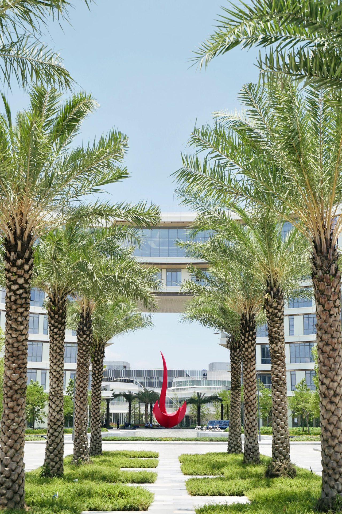

Event Overview
Designing Age-Friendly Intelligent Agents for Senior People
This workshop focuses on designing age-friendly intelligent agents that support senior people in their everyday lives. We bring together researchers, students, and industry practitioners who work on human–AI interaction, accessibility, healthcare, and aging.
The event will take place on the HKUST(GZ) campus and feature themed talks, panel discussions, small-group discussions, and co-design activities that explore opportunities, challenges, and design paradigms for building inclusive, trustworthy, and adaptive intelligent agents for senior users.
- Date: 2027.06.01 (Full-day workshop)
- Venue: HKUST(GZ), C2-102
- Expected Participants: 30–50 people
- Online Access: Zoom / Tencent Meeting for public audience

